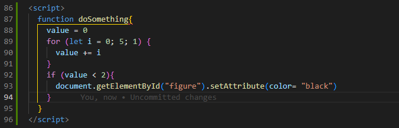

Introduction
Websites previously were built statically without Javascript, what you saw is what you got. Content can now change on the page, showing new content, or tracking changes and interactions behind the scenes.
Analogy for Javascript
Imagine you have a square dull block of clay representing the HTML, and throughout the clay is a mixture of colors and shapes. The Javascript is the spinning disk and the sculter, working to shape the clay and all its colors into its intended purpose. The shape of the clay could change infinitly or finitely depending on the rules the sculter has been given.
Explain control flow and loops
Control flow generally is the process in which the program is right, which is top to bottom, unless a function is called or loop is run. If a function is called, then the program will jump to the function and run the code with the content requested. With loops, they are not called but iterated over in order. When the program comes across a loop the comands within the loop iterated until the loop condition has been completed. A loop condition consists of a start and end value and between that range, there is a step size. The number of iterations therefore is range divided by step size.
Accessing data from arrays and objects
Arrays are simply lists of information that can be indexed with number [0] would be the first value, [0][2] would be the first row second column. An object is similar to a dictionary in python, it is a collection of keys(or parameters) with values within them. See below for examples of arrays. The notation for arrays are square brackets [], and objects are donated by curly brackets {}. You can put arrays inside of objects but not the other way around.
// Example of an object
const altered-carbon = {
// below are keys: value --> example media-type: 'movie'
media-type: 'Movie'
genre: 'Sci-fy'
seasons: '2'
next-season: 'cancelled'
best-Sci-fy: 'Absolutely'
}
// to access a object you could use the follow code below
// altered-carbon.media-type = 'Movie'
// or
// altered-carbon['media-type'] = 'Movie'
// Example of a list
let best-TV-series = ['Altered Carbon', 'Game Of Thrones',
'Breaking Bad', 'Sherlock Holmes', 'West World']
// to access the list
// best-TV-series[0] = 'Altered Carbon'
Functions
Functions at their most basic, is a procedure which takes a set of inputs and produces and output. Outputs could be a value calculated, task performed regarding display, tracking or request. The inputs could be an object, array or anything that can be executed upon. Below is an example of a function. Function are useful of regular lines of code because they can be called and run an infinite amount of times, and even more useful is when you link them to an event or interaction a user has with the site. Analogy for a function could cooking your favourite meal, you can cook than meal as many times as you like, and follow a list of steps to procude a final outcome, YOUR MEAL! 
Describe the DOM
The DOM(Document object Model) is a useful tool in Javascript which outlines an entire stucture of a document, which in our case is the webpage of the HTML document. The DOM allows you to traverse anywhere along the tree to access and alter any part of the webpage. This is pretty powerful stuff. We can use the DOM to select all the object given their attributes, ID's and more.
// The document.getElementById will search through the entire document to look for an ID with
// 'button' and then the .innerHTML will edit the context of the HTML to 'Click Here' and replace everything
// inside it.
document.getElementById("button").innerHTML = 'Click Here'